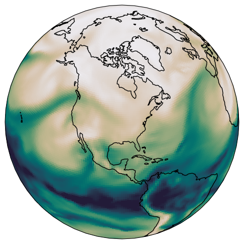

Neil C. Swart
Research Scientist
Canadian Centre for Climate Modelling and Analysis (CCCma)
Environment and Climate Change Canada
{{ site.data.about.hero.tagline }}

Research Scientist
Canadian Centre for Climate Modelling and Analysis (CCCma)
Environment and Climate Change Canada
{{ site.data.about.hero.tagline }}
Scientific questions I work on — using Earth System Models and observations
{{ card.description }}
{% if card.papers %}Named initiatives, models, and tools I lead or co-lead
{{ project.description }}
{% if project.links %}Full list on Google Scholar | ORCID
{{ pub.authors }}: {{ pub.title }}, {{ pub.journal }}, {{ pub.details }}{% if pub.doi %}, https://doi.org/{{ pub.doi }}{% endif %}, {{ pub.year }}.
{{ site.data.impact.ipcc }}
{{ site.data.impact.training }}
 ORCID
ORCID